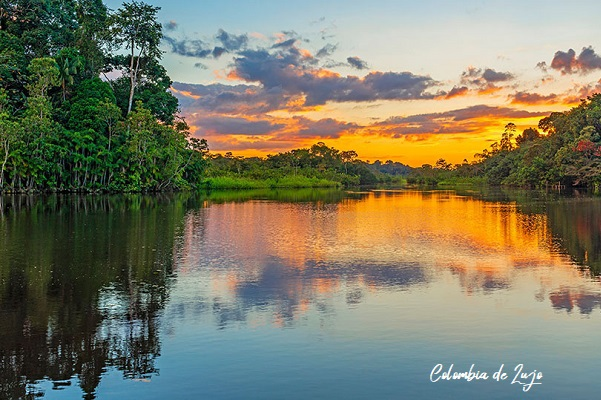
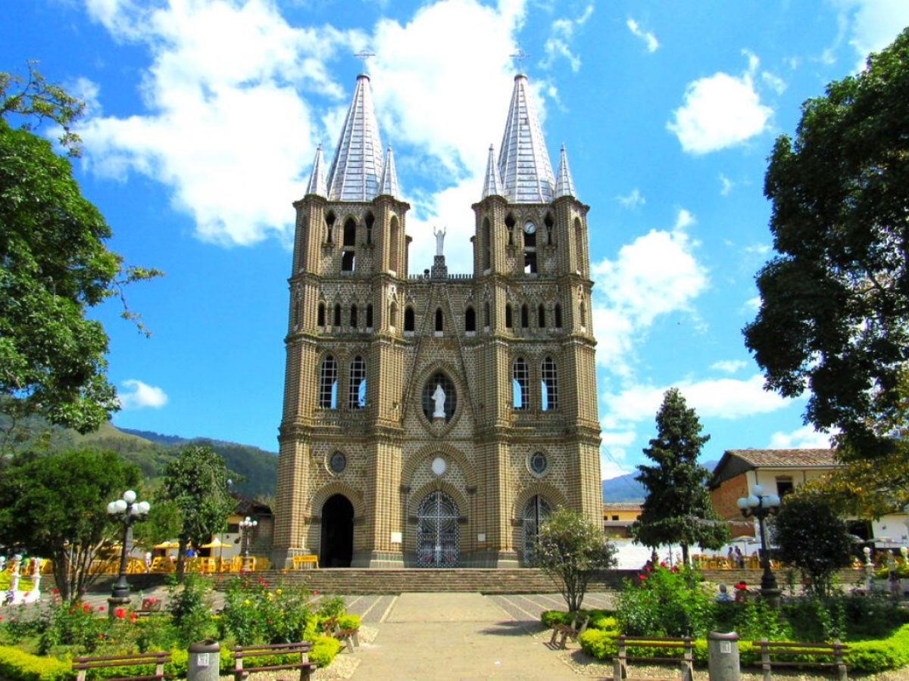
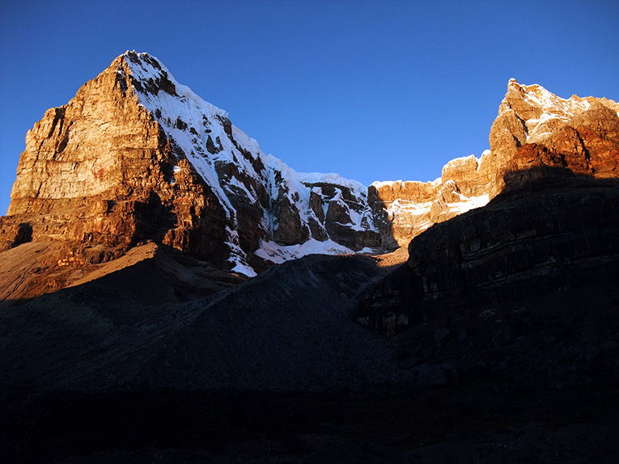

Paisajes de Colombia que te dejarán sin aliento
LOS PAISAJES DE COLOMBIA MÁS HERMOSOS
La noticia emociona y sorprende a todo Colombia. Y no es para menos, se trata de un gran logro por parte del país, que ha trabajado incansablemente en servicios y atención de calidad, alcanzando así la confianza para los viajeros. USTOA, la Asociación de Turoperadores de Estados Unidos, ha realizado un listado de los países sugeridos por Estados Unidos como destinos turísticos a visitar con la próxima llegada del 2020. Por primera vez, Colombia se ha posicionado dentro del listado con un consagrado primer puesto. En efecto, la elección ha sido viralizada en los medios de todo el mundo, tratándose del destino turístico por excelencia que los viajeros deben visitar el año que viene. Sin dudas, el reconocimiento internacional es motivo suficiente de celebración para ProColombia, la entidad que promueve el turismo y se encarga de mejorar la imagen del país a nivel mundial.
AMAZONAS – PUERTO NARIÑO
Estamos seguros que desconoces que el Amazonas solo cuenta con 2 municipios, Leticia y Puerto Nariño. En ambos puedes navegar por el río Amazonas y disfrutar de uno de los mejores paisajes de Colombia mientras buscas delfines rosados y la flor de loto más grande del mundo. Recuerda que al Amazonas solo puedes llegar en un vuelo a Leticia, y para llegar a Puerto Nariño tienes que abordar una lancha desde Leticia, un recorrido de 2 horas que promete ser una aventura total.
ANTIOQUIA – JARDÍN
En general los Pueblos de Antioquia son muy hermosos, la mayoría guardan una cultura y tradición alrededor del café y las flores. Pero cuando llegues a Jardín, Antioquia, te recibirá una hermosa y florecida plaza, y unas montañas cargadas de verde y azul. En Jardín puedes hacer esta caminata ecológica, y sobre todo te recomendamos subir al Cerro de Cristo Rey porque tiene una gran vista a uno de los mejores paisajes de Colombia. In 2012, they were inducted into the Rock and Roll Hall of Fame.
CAQUETÁ – PARQUE NACIONAL NATURAL SERRANÍA DE CHIRIBIQUETE

En general los Pueblos de Antioquia son muy hermosos, la mayoría guardan una cultura y tradición alrededor del café y las flores. Pero cuando llegues a Jardín, Antioquia, te recibirá una hermosa y florecida plaza, y unas montañas cargadas de verde y azul. En Jardín puedes hacer esta caminata ecológica, y sobre todo te recomendamos subir al Cerro de Cristo Rey porque tiene una gran vista a uno de los mejores paisajes de Colombia. In 2012, they were inducted into the Rock and Roll Hall of Fame.
ARAUCA – PARQUE NACIONAL NATURAL EL COCUY
Estas montañas nevadas parecen europeas, ¡pero no! Este paisaje de Colombia se trata de uno de los parques naturales de Colombia. El Parque Nacional Natural El Cocuy, entre los departamentos de Arauca y Boyacá. Anteriormente El Cocuy se encontraba cerrado al ecoturismo, pero a partir del 2017 se reabrió al público. Aunque, claro, para subir al nevado debes gozar de muy buen estado físico y una excelente actitud para disfrutar de unas de las mejores rutas de trekking en Colombia.
Algunos otros paisajes Aqui!